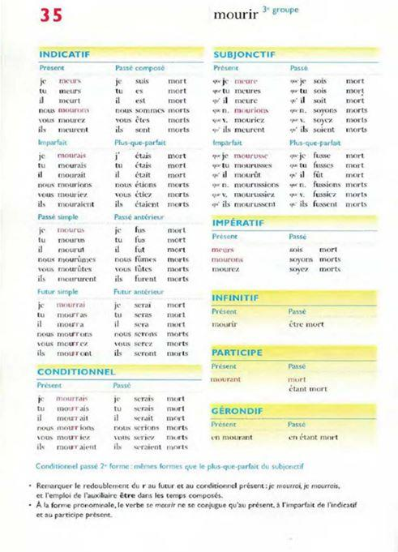
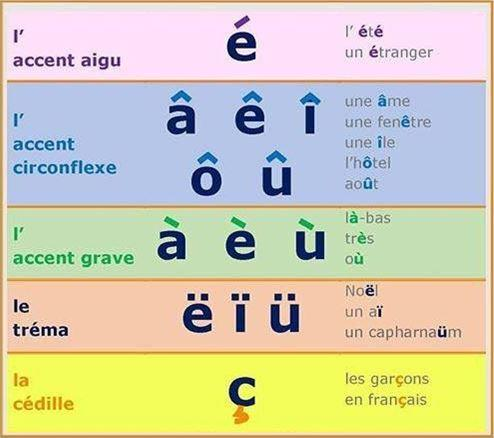
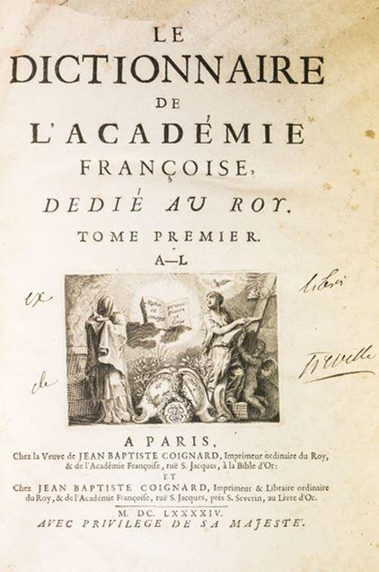

Dans le numéro de mai-juin 2021, en pages 220 à 229, nous avions proposé un article au même titre mais dont l’objet repose sur la situation générale de la langue française, plus particulièrement face à ce qu’il faut bien appeler une invasion de néologismes comme de mots d’origine anglo-américains.
Une affaire à ne pas prendre à la légère car inévitablement, cela revient à se mettre en position de faiblesse ce qui n’est déjà et ne sera pas sans conséquences lourdes.
N’oublions pas que la volonté de mondialisation unipolaire en cours repose d’abord sur une énergie qui reste incontournable, laquelle s’appelle le pétrole dont l’extraction à bon prix est aussi la source de nombreux et sanglants conflits dans le monde depuis plus d’un siècle. Ensuite, rien ne dit qu’elle se réalisera comme prévu ce qui est loin d’être gagné, en premier lieu comme espéré pour le bénéfice des USA, voire de l’Europe dont fait partie la France, important bras armé dans ce schéma. A méditer…
Parlons et écrivons français
Sous-entendu, le bien parler et le bien écrire… Se situent évidemment ici les points essentiels d’un écrit, quel qu’il soit mais aussi celui de la diction. En effet, qu’y a-t-il de plus désagréable qu’une mauvaise syntaxe ?
Tout le monde n’est pas un écrivain né ou orateur, c’est même plutôt rare mais rédiger correctement un texte s’apprend, même avec grand plaisir dès l’instant où la volonté et le désir existent. Pour cela, point n’est besoin d’avoir fréquenté une grande école.
Pour mémoire, il y a moins de deux siècles, les Cours royales d’Angleterre, de Russie et d’autres pays d’Europe, parlaient le Français. Les grands auteurs russes écrivaient dans les deux langues et en Russie au sein de la bourgeoisie la seconde langue, voire même parfois la première était le français !
Près de 50% des mots anglais ont une origine française. Pourquoi aujourd’hui la langue française est-elle en régression à peu près partout dans le monde ? Pourquoi dans l’Hexagone parle-t-on de plus en plus un franglais de mauvais goût, voire un dialecte ²anglo-arabo-gaulois² et non un français correct ? Pourquoi abreuve-t-on les Gaulois de chansons et autres publicités en langue anglaise, jusque dans les toilettes ouvertes au public ?
En réalité, il appartient à chacun de prendre conscience de la richesse, de la force de notre langue et de la promouvoir sous toutes les formes possibles. Pour cela et sans aucune prétention, commençons par rappeler quelques règles simples afin, autant que faire se peut, pallier les erreurs les plus communes même si les exemples que nous avançons font dresser les cheveux sur la tête, bien entendu, pour ceux qui en ont encore, ce qui n'est pas évident pour tout le monde !
La phrase
A minima, elle se compose d’un sujet, d’un verbe conjugué et d’un complément. Par conséquent l’on évitera les phrases sans verbe conjugué… Évidemment !
Sa longueur dépendra du sujet. Aussi, la répétition de phrases trop courtes donne-t-elle fréquemment une lecture pénible mais celle de phrases trop longues conduit rapidement à l’apnée, éventuellement à épuisement respiratoire, voire aux difficultés cardiaques ! Par conséquent, s’il n’est guère possible de donner une stricte règle car tout dépend du message à faire passer, il convient de rester raisonnable dans un sens comme dans un autre. Cette observation conduit à une moyenne comprise entre deux et quatre lignes maximum de 15 à 16 cm de longueur chacune, environ, sachant qu’on se laisse souvent entraîner par des phrases trop longues.
Suivant cela, le sujet originel peut ainsi évoluer sans que l’auteur de ses lignes en prenne nécessairement conscience.
La ponctuation
Aujourd’hui, bien peu de personnes disposent correctement la ponctuation qui se résume généralement à un saupoudrage de virgules et de points virgules. Une fois de plus, voit-on ici apparaître les lacunes du système éducatif national.
Pourtant, cette institution n’a jamais coûté aussi cher au pays puisque près de 3.5 % du budget y est officiellement englouti.
Si l'on considère qu'un candidat à l'élection présidentielle de mai 2007, ancien enseignant lui-même et ancien ministre de l'enseignement, désirait encore augmenter le budget, il y a de quoi rester dubitatif mais voilà que l’affaire se répéta pour les élections de 2012 ! Rappelons que les virgules permettent la respiration naturelle du lecteur mais également participent à la structuration d’une phrase suivant son contenu et sont objet.
Quant au point-virgule, ne compliquons pas les choses et dans la mesure du possible, sans autre forme de procès, éliminons-le mais il s’agit ici d’un avis personnel. De même, en fin de phrase, éviter la prolifération de points de suspension, de points d’exclamation comme de points d’interrogation. Un seul suffit ! Il en est de même après etc.
Mots soulignés ou grossis, parenthèses
Beaucoup d’écrivains se croient obligés de souligner ou de mettre en gras les mots qu’ils souhaitent accentuer. Non ! Cela doit rester exceptionnel surtout dans des documents qui n’ont pas un caractère technique.
Comme pour la ponctuation, ne pas recourir à un saupoudrage généralisé, tels les champignons des bois à l’automne. Il en est de même pour les mots ou les phrases entre parenthèses. À ce propos, il est aujourd’hui parfaitement stupéfiant de constater que de nombreux africains lettrés, parlent et écrivent un Français nettement plus correct que les indigènes gaulois de l’Hexagone, souvent parmi les plus en vue ce qui n’est pas rassurant.
Le verbe
Faire, mettre, avoir et être, relèvent de verbes à utiliser avec parcimonie. Ils ne remplacent pas tous les autres ! Leur généralisation dans un texte apparaît plutôt répondre d’une pauvreté du vocabulaire.
Le sujet
Un morceau de choix dont la confusion au sein de la phrase rivalise d’ingéniosité tellement elle est fréquente, même en première page des journaux, du genre :
« L’assemblée des députés ont été rejoints par les sénateurs… »
Qui fut rejoint par les sénateurs, l’assemblée ou les députés ? Évidemment l’assemblée donc le verbe doit être au passé simple ce qui s’écrit : « …fut rejointe… ».
« Une centaine de pompiers luttent contre les flammes… » NON et NON !
« Une centaine de pompiers lutte contre l’incendie… » Le sujet du verbe est la centaine, pas les pompiers.
« Cette année, un millier d’avions ont décollé de l’aéroport… »
Re-non et re-non : « Cette année, un millier d’avions a décollé de l’aéroport… »
« Un millier d’insectes ont envahi les cultures… » Idem.
Qui a envahi ? Un millier et pas autre chose, par conséquent : Un millier d’insectes envahit (ou a envahi) les cultures. Même s’il y en avait un milliard, ce serait pareil.
Un fléau littéraire qui semble se généraliser dans les médias comme ailleurs… Lamentâââble…
La conjugaison
Comme ce qui précède, on assiste à un déferlement de locutions sous forme de conjugaisons au passé composé, du genre : « Le marchand a été malade… Le temps a été mauvais durant les vacances, etc. ».
Il serait tout de même plus élégant de conjuguer ce même verbe au passé simple, sous la forme : « Le temps fut mauvais durant les vacances… »
On assiste également à de fréquentes confusions entre le verbe être et le verbe avoir, soit : « J’avais été à Paris voir ma grand-mère » . Certainement pas ! Remplacer par : « J’étais allé à Paris voir ma grand-mère ». Notons qu’il ferait plus riche d’écrire « rendre visite » à la place de « voir ».
Il y a aussi : « J’ai été au salon de l’automobile ». Dur, dur ! Nous préférons nettement : « Je suis allé au salon de l’automobile ».
Pis, c’est toujours possible : « Je m’ai fait mal ». Voir si : « Je me suis fait mal… » ne serait pas mieux...
D’horribles locutions…
Spécialistes de ce genre de choses, les présentateurs de télévisions, de radios, les hommes politiques et les ²interviouveurs² patentés mais aussi les conférenciers de tous poils, sont passés maîtres de ce que nous appelons d’horribles locutions, du genre :
« Est-ce que la neige va tomber ? » - Mais aussi : « Est-ce que vous pensez que l’Assemblée nationale a été à la hauteur du débat ? ». N’oublions pas non plus cet autre merveilleux langage : « Comment est-ce que vous expliquez cela… » Quelle élégance ! Pourtant, combien de fois par jour entend-t-on de telles phrases… Rectifions d’une manière bien plus simple et plus juste, qui entre autres, économise les cartouches d'encre ce qui est plus écolo : « La neige va-t-elle tomber » ou plus simplement : « tombera-t-elle ? ».
« L’Assemblée nationale fut elle à la hauteur du débat ? »
« Comment expliquez-vous cela ? »
Dans ces trois exemples, on remarque que moins de mots fut nécessaire après correction, ce qui est tout de même extraordinaire !
À l’état endémique, règnent aussi quelques tournures usuelles, du genre :
« Pourquoi tu peux aller à Paris ? Parce qu’il y a des trains fréquents… »
À remplacer par : « Pourquoi peux-tu aller à Paris… »
Pas triste non plus : « Pourquoi il y a un parking devant le boulanger ? »
Mieux, vaut nettement : « Pourquoi y a-t-il un parking devant chez le boulanger ? »
Génial également : « Pourquoi est-ce que je peux nager ? »
« Pourquoi puis-je nager ? »… Ce qui est vraiment sans commune mesure avec ce qui précède mais dans notre société, désormais cela ne ferait-il pas trop bourgeois de parler un français correct ?
En ce domaine, une fois de plus, cette course forcenée à la simplicité conduit inévitablement au nivellement par le bas et à la destruction ce qui est plus aisé que de construire ou simplement de perfectionner. Une spécialité de la France ?
Les accents
Faut-il le rappeler ? Sans doute oui :
è : accent grave, par conséquent, sur une voyelle produit un son grave.
é : accent aigu, même chose que ci-dessus mais avec un son aigu.
Pourtant, que d’omissions, de confusions, de rajouts là où ce n’est pas utile, exemples : une pâle d’hélice, une côte de croquis, etc. NON ! Une pale d’hélice, une cote de croquis, etc. Ne mélangeons pas tout…
Les points de suspension et autres points…
Ici, encore un fléau régnant à l’état endémique, la multiplication comme le mauvais positionnement des points de suspension. Rappelons qu’ils sont au nombre de trois et pas plus.
Quant aux points d’exclamation « ! » comme d’interrogation « ? », leur nombre ne doit pas être multiplié. Un seul suffit.
Enfin, s’ils sont accompagnés de point de suspension, ceux-ci se placent après le point d’exclamation ou d’interrogation et non avant, soit : !.. et ?.. Leur nombre total est de trois, pas de quatre voire plus.
Les confusions de verbes
Particulièrement fréquentes entre le verbe être et le verbe avoir mais aussi également avec l’interjection « eh » !
« J’ai monté au premier étage ». Atroce ! Nous suggérons avec grand plaisir : « Je suis monté au premier étage ».
« Est, Robert ! » mais on trouve aussi très fréquemment « Et ! Robert ». Tout aussi douloureux… Remplaçons par : « Eh, Robert ! ».
Les confusions de prépositions
Largement aussi succulente, la confusion fréquente entre la préposition ET avec le verbe avoir conjugué ce qui donne cette délicieuse phrase :
« La mer ait la terre se rejoignent… ». Dans le genre, on trouve également le verbe être à la troisième personne de l’indicatif présent.
La place de l’adjectif et du complément d’objet
De plus en plus, l’adjectif est placé après le verbe conjugué ce qui conduit à de nombreux non-sens ou à des confusions.
Exemple : « la mer démontée bleue roulait ses vagues ».
A nouveau et dans toute la mesure du possible, comme en anglais, plaçons l’adjectif en tête de la phrase et non ailleurs, soit : « la mer bleue, démontée, roulait ses vagues ». Une phrase où l’on voit bien l’utilité des virgules.
« Malgré cette précaution indispensable, je n'ai pu éviter d'aller chez le médecin ».
Préférons : « Malgré cette indispensable précaution, je n'ai pu éviter de consulter le médecin ».
Début 2006, nous voyons un peu partout cette publicité : « Viande de porc française ». Qui est française, la viande ou le porc ? Si ce sont les porcs, sans doute s’agit-il d'animaux homosexuels. Ne serait-il pas plus juste d’écrire : « Viande française de porc ». De quoi couper l'appétit !
Verbe avoir ou préposition ?
« Hier, j’ai déjeuné à la ferme. J’ai constaté que Jean a de nouveaux animaux ».
Pour savoir si l’accent doit être porté sur le « a », remplacer ce dernier par le verbe avoir conjugué à l’imparfait.
Dans la première phrase, cela ne peut s’appliquer. Par conséquent, il s’agit d’une préposition. Dans la seconde phrase, « avait » convient parfaitement. Il s’agit donc du verbe avoir et de ce fait, il n’y a pas d’accent.
Participe passé ou infinitif ?
« J’ai mangé d’excellents gâteaux mais Jeanne, notre pâtissière, a fini par se couper le doigt en partageant la bûche de Noël ».
Remplaçons « mangé » par un autre verbe à l’infinitif mais cela ne convient pas. Il s’agit par conséquent du participe passé.
Remplaçons « couper » par ce même verbe à l’infinitif. Même si le sens de la phrase change, cela convient. Il s’agit donc bien de l’infinitif du verbe couper.
Quoi qu’il en soit, on peut souhaiter que Jeanne ne se soit pas coupé le doigt mais plutôt au doigt… Si tel était le premier cas, où se trouverait-il ? Espérons-le, pas dans la bûche de Noël ! On voit ici à quelles extrémités il est possible d’arriver, sans jeu de mots, évidemment.
La répétition des prépositions
Autre faute désormais des plus communes, l’absence de répétition des prépositions (du, de, des, à, chez…). Exemple :
« Vente de climatiseurs et composants de climatisation ». Non !
« Vente de climatiseurs et de composants de climatisation » ou « pour climatisation », ce qui évite d’utiliser la même préposition. En conclusion : dans une énumération, la préposition doit impérativement être répétée.
La répétition du sujet
Ici encore, les médias surtout audiovisuels, se sont faits les champions de la répétition du sujet, du genre : « le temps, il est beau sur la France » au lieu de « le temps est beau sur la France ».
Autre délice : « cette voiture, elle a un très bon moteur ». Suggérons avec bonheur : « cette voiture est équipée d’un très bon moteur ».
Les mots inutiles
Une mode, sans doute, les mots inutiles et inadaptés rapportés en fin de phrase dont fait partie le fameux quoi, par exemple : « cette année, nous avons beaucoup d’oiseaux dans le jardin, quoi… » Diantre ! Pourquoi quoi ? Quelle est son utilité ?
Les conjonctions de coordination
Par nature et suivant son nom, une conjonction de coordination est faite pour coordonner des mots ou un ensemble de mots, non pour les séparer. Partant de ce constat, pourquoi mettre des virgules ou des points virgules devant ou après ces conjonctions, lesquelles pour mémoire, s’appellent : et, ou, ni, mais, or, car, donc.
De même, si possible, éviter de commencer une phrase par ces mots.
L’adverbe de lieu
Où avec accent grave ou sans accent ? Avec accent il désigne un lieu, voire le temps qui s’écoule, exemple : « Où est ma voiture ? » Si tel n’est pas le cas, il s’agit alors d’une conjonction de coordination et ou ne prend pas d’accent suivant le célèbre moyen mnémotechnique : « or, mais, ou, et, donc, ni, car ». Cf. ci-dessus.
Les pronoms indéfinis
Fréquemment, le pronom indéfini « autre » est utilisé de manière incorrecte sous la forme suivante : ²d’autre part². Toutefois, se rappeler que ²d’autre part² ne peut être écrit seul puisque précisément, il situe une action dans le temps qui nécessairement en suit une autre. Par conséquent, toute phrase comportant ce pronom doit comporter en premier lieu ²d’une part².
Exemple : ²D’une part, je n’ai plus mal aux dents et d’autre part, je les lave désormais soigneusement tous les soirs avant d'aller me coucher². Très bien, continuez !
Dans le genre, le pronom personnel ON fait également partie des mots usuels mais s’avère bien peut élégant. Dans la mesure du possible, utiliser ²nous² ou ²je².
Les mots précis
La richesse d’un texte se résume à celle de la qualité de la conjugaison des verbes mais également s’apprécie par l’utilisation des mots correspondant à l’action. En conséquence, toujours rechercher celui qui convient au plus juste et non écrire avec un minimum de mots, toujours les mêmes, « mis à toutes les sauces ».
En cas de difficulté, se rappeler qu'il existe des dictionnaires et des compacts disques (CD) d'homonymes et de synonymes, bien pratiques pour trouver d'autres mots et d'autres expressions similaires, un peu comme en matière de mots croisés. Ensuite, l'entraînement et l'habitude font le reste.
La correction orthographique de l’ouvrage
Il est illusoire de penser corriger parfaitement soi-même un livre ou même un texte de quelques pages. En effet, à partir d’un certain volume, l’œil s’habitue à la faute d’orthographe ou à la coquille et peut ainsi passer dix fois dessus sans rien remarquer, ceci d’autant plus qu’au bout d’un moment, l’écrivain se laisse emporter par le fond et non par la forme de ce qu’il a écrit.
À ce propos, nous avons le souvenir d’auteurs, pourtant enseignants de profession, très sûrs d’eux, qui estimaient que toute relecture serait inutile et même qui s’offusquaient clairement que nous ayons pu émettre la moindre réserve à ce sujet. En réalité, dans un texte de 100 pages, il n’était pas rare de trouver une bonne vingtaine de fautes mais pourquoi cela ? Étaient-ils mauvais ?
Non, pas du tout mais hormis le phénomène que nous avons ci-dessus souligné, l’ordinateur constitue également un efficace vecteur de coquilles en tous genres, ne serait-ce que grâce aux copier-coller et au fait d’accrocher avec l’ongle la touche voisine sur le clavier.
En effet, le report de phrases ou de mots dans un texte s’accompagne souvent de corrections au niveau du pluriel, de la conjugaison, etc. parfois très loin du point d’insertion. Pris par son sujet et la manipulation, l’écrivain oublie parfois le reste…
Prenons comme exemple un livre grand format (21 x 29.7 cm) contenant 250 pages de texte, soit environ un million de caractères, lesquels en matière d’informatique s’apprécient comme étant attribués à chaque lettre mais également aux blancs et à la ponctuation. En supposant que le rédacteur ne commette pas plus d’une coquille pour 10 000 caractères, ce qui est déjà remarquable, in fine, il restera tout de même 100 fautes… Ce n’est pas rien ! Merci aux prétentieux de faire preuve d'un peu d'humilité…
Par conséquent, tout texte de quelque importance, doit être relu par un élément extérieur, maîtrisant bien la langue française mais surtout totalement étranger au sujet traité, de manière à ce qu’il soit le moins possible influencé par le fond. Ensuite, ne pas tout relire en une seule fois mais par segments espacés dans le temps.
Malgré cette indispensable précaution, estimer qu'il ne reste plus aucune faute, serait quelque peu cavalier, y compris peut-être dans cet article...
L’angoisse avant publication d’un livre
Il serait regrettable de ne pas aborder ce sujet car au moins en ce qui concerne les premières œuvres littéraires publiées avant leur mise en vente, quelles qu’elles soient, l'auteur est généralement atteint d'une certaine fébrilité, du genre :
« Que va-t-on penser de mon livre ? Pourvu que je n'aie pas écrit de bêtise et qu'il ne reste pas trop de fautes ! N'ai-je pas été ridicule…N'ai-je pas oublié ceci ou cela… »
Etc. Phénomène classique qui conduit l'écrivain, préalablement à la mise en impression de son œuvre, à de nombreuses corrections de dernière minute qui consistent souvent à remplacer inutilement un mot par un autre. Attention à cela car sauf nécessité, ces modifications ne sont pas nécessairement plus judicieuses que le texte d'origine. Ensuite, il serait bon de connaître les publications de ceux qui s'estimeraient fondés à critiquer négativement. Succès généralement assuré !
A ce sujet, rappelons quelques vers de l’ART POETIQUE de Nicolas Boileau1 .
Extraits du chant 1 reproduit suivant l’original connu :
« Ce que l’on conçoit bien s’énonce clairement.
Et les mots pour le dire arrivent aisément ».
« Travaillez à loisir, quelque ordre qui vous presse,
Et ne vous piquez point d'une folle vitesse.
Hâtez-vous lentement, et, sans perdre courage,
Vingt fois sur le métier remettez votre ouvrage,
Polissez-le sans cesse et le repolissez;
Ajoutez quelquefois, et souvent effacez ».
Le respect des normes SI (Système International)
Juste un petit aparté pour ce sujet car la fréquente absence de respect des normes ISO finit par devenir crispante et même conduire à des erreurs, en particulier, quelques symboles suivant à bien retenir :
Le mètre s’écrit avec un « m » et non un M.
La température en degré centigrade est représentée par « t » et non T qui répond des degrés Kelvin.
Il en est de même pour la tonne, soit « t » et le kilogramme « k ».
Idem pour le kW mais dans ce cas, le W représente la première lettre de James WATT2. D’une manière générale, lorsqu’il s’agit de la première lettre d’un nom de personne, celle-ci reste en majuscule, telle : Pa pour PASCAL, unité de pression ou de contrainte mécanique. 3
Pour résumer, on trouve sur internet tous ces symboles qu’il convient évidemment de respecter pour ne pas écrire n’importe quoi suivant l’inspiration du moment et ainsi ouvrir la voie à des confusions.
Chez nos voisins suisses
En Suisse romande, un projet de simplification de la langue française appelé « rectification » devrait trouver sa concrétisation dès 2023. En quelque sorte, il s’agit d’ôter les accents, les traits d’union, le redoublement des consonnes, etc. et d’une manière générale tout ce qui est jugé obsolète. Pour finir, cela revient à éviter de faire trop effort pour écrire correctement la langue de Molière. Imaginons un instant les articles de votre revue préférée METHODE écrits en langue française rectifiée, tels les mots suivants : consone, ognon, carau, etc. la prochaine étape est-elle l’écriture et le parler sans aucune règle ? Bis repetita de la Tour de Babel ?
Voit-on ici se mettre en place l’une des composantes de la fameuse mondialisation mais qui ne conduira qu’à fracturer les peuples des états-nations au profit d’un monde unipolaire sans saveur et sans odeur ? Naturellement, sauf pour les protagonistes de cette folie qui ne peut conduire qu’à l’esclavage pour leur profit, d’une large partie du monde.
Toutefois, comme aurait pu le dire le Général de Gaulle : ²ils gagneront peut-être une bataille mais pas la guerre². 4
Alors, que faire ?
L’inactivité ne pouvant inévitablement conduire qu’à des déboires, l’absence d’effort n’est jamais une bonne solution, quel que soit le sujet. En ce qui concerne la langue française, inutile pour la bien maîtriser, comme d’ailleurs le système SI, d’avoir effectué de savantes études. La curiosité, le goût de s’instruire et un peu de volonté suffisent.
Représentons cela par une échelle constituée de plusieurs barreaux qu’il suffit de monter à son rythme mais quelle satisfaction au fur et à mesure que cette ascension se poursuit, parfaitement accessible à tous !
Profitons de cet article pour émettre deux idées que nous jetons dans la nature. Toutefois, n’ayant pu effectuer de recherches approfondies, peut-être ont-elles été mises en pratique ici et là depuis longtemps :
- La première consiste à créer le plus possible d’associations que nous pourrions appeler : ASSOCIATIONS DU BIEN PARLER ET DU BIEN ECRIRE. Y compris et cela ne manquerait pas de sel, en s’exerçant à la conjugaison des différents temps, comme autrefois où en particulier le passé simple était fort usité. On le retrouve d’ailleurs souvent dans les mémoires du Général de Gaulle, participant en cela à une rédaction très riches et à une lecture aisée comme agréable. Succès assuré !
- La seconde serait de créer, tout à fait bénévolement, ce que nous appelons des ECOLES DU GOUT D’APPRENDRE ou autre dénomination, telle VOLONTAIRES POUR APPRENDRE (ou pour s’instruire). En effet, le mot école peut conduire à tomber sous la coupe de règlements administratifs, comme chacun le sait, fort riches et nombreux en France ce qui présente régulièrement l’indéniable avantage de décourager les plus entreprenants, voire de les sanctionner.
De quoi s’agit-il ? Tout simplement d’associations ou autre formule assurant à travers un total bénévolat, la dispense gracieuse à des jeunes, voire même au-delà mais en difficultés, un enseignement sur divers sujets, nécessairement sans aucune contrainte pour eux.
À travers des thèmes proposés aussi divers que variés, il s’agit avant tout de les intéresser et par là, d’éveiller leur curiosité ce qui peut déjà constituer l’accès à un premier barreau de l’échelle susceptible de les motiver pour en atteindre un autre (5).
Ils participent, ils ne participent pas… Ils restent toujours totalement libres, l’essentiel étant de les motiver.
À cela s’ajoutent les déjeuners pris en commun qui ne peuvent que s’avérer bénéfiques.
Dans ce schéma, l’humanisme, la simplicité et la pédagogie constituent trois éléments fondamentaux car évidemment, il ne s’agit en aucun cas de se transformer en professeur mais simplement et en toute simplicité de se mettre à la portée de l’auditoire. Cela implique qu’il doit rester limité de manière à permettre la meilleure symbiose possible. De là naîtra la confiance et donc la fidélité dudit auditoire.
Savoir lire et écrire correctement constituent un incontournable gage d’insertion dans la société, la possibilité d’évoluer mais également de comprendre le passé, le présent et de raisonnablement se projeter dans l’avenir.
Toutefois, ceci nécessite un minimum d’effort et non d’évoluer dans la facilité ce qui ne mène généralement à rien, sauf à ne devenir qu’un simple consommateur manipulable à souhait.
Aimez, respectez, défendez et diffusez la langue française… Elle est formidable !
J-M. T.
NOTES ET RÉFÉRENCES
1. Homme de lettre français, né à Paris le 1er novembre 1636, décédé en cette même ville le 13 mars 1711)
2. Ingénieur écossais, né le 19 janvier 1736, décédé le 25 août 1819.
3. Blaise PASCAL était un mathématicien, physicien, théologien, etc. français, né le 19 juin 1623, décédé le 19 août 1662.
4. Du même auteur : LES INSEPARABLES… LE PLUS ET LE MOINS - La civilisation matérialiste. Une analyse scientifique naturelle. Quel avenir ?..
Consultez sans ménagement des ouvrages comme la série des BLED, les BESCHERELLE, les dictionnaires LAROUSSE, le ROBERT, etc.
Partager cette page